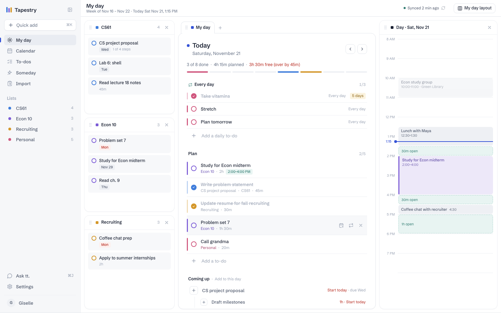
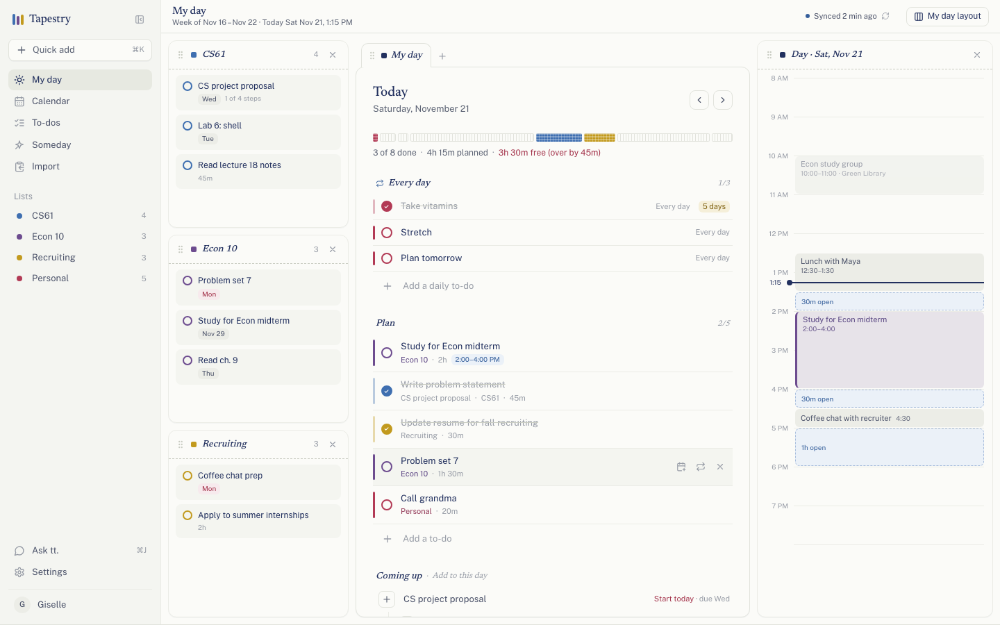
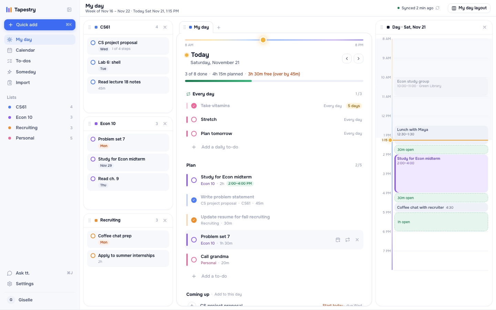

The same Saturday on My day, same layout and the app's own sizes, in three light colour systems. Each page has a font and weight switcher in the corner, and a token sheet when you scroll down.

Closest to today. Cool blue-black ink, ink-blue now-line. Every to-do is a thread; progress fills one thread per finished to-do.

Dyed cloth. Indigo ink on pale grey-green, natural-dye list colours, serif for the day. Progress is a woven band.

Brightest and roundest. Noon blue, mint open time, the sun as the now-marker on a sky ribbon that runs 8 AM to 8 PM.
How to answer: pick a colour direction, a font and a weight set separately, e.g. “Loom colours, Onest, Medium”. They mix freely, because every colour maps onto the app's existing CSS variables.